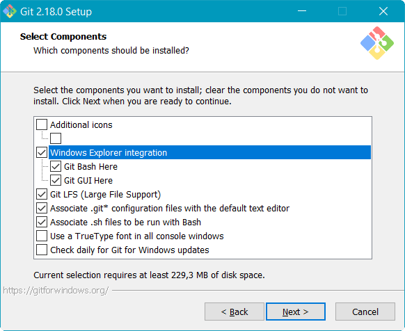
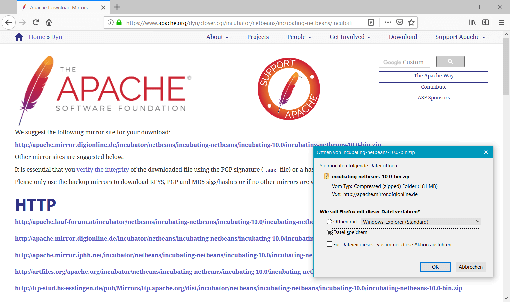
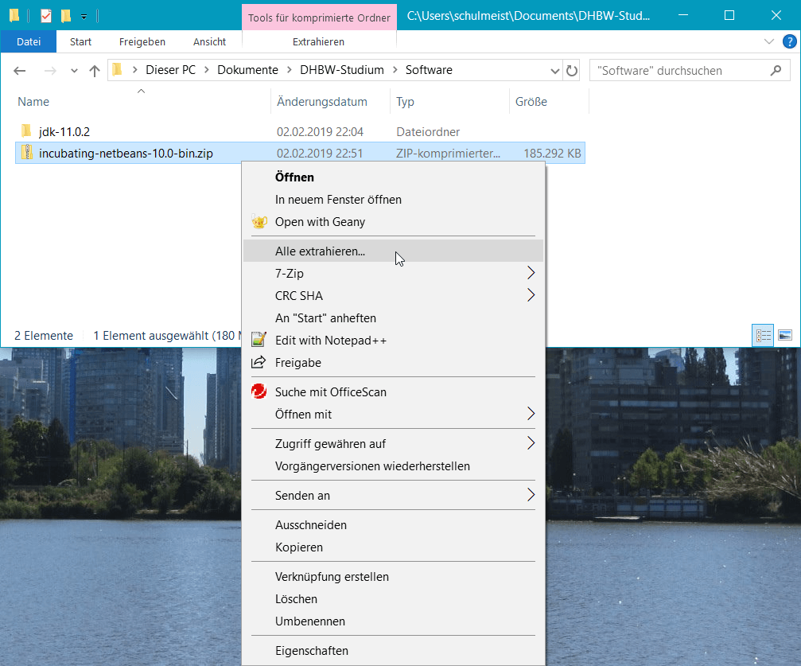

Im dritten Semester nähern wir uns nun immer mehr der professionellen
Softwareentwicklung an. In der Vorlesung setzen wir daher von Anfang an
auf die richtigen Werkzeuge, um unsere Projekte so praxisnah wie möglich
aufzuziehen. Insgesamt benötigen wir deshalb folgende Programme:
Git
node.js
Atom
Java Development Kit
Apache NetBeans
Apache TomEE
Apache Derby
Die Programme haben dabei folgende Funktion:
Git
Einst waren Compiler und Editor alles, was man zum Programmieren benötigte.
Doch je größer ein Projekt wird, desto schwieriger wird es, die Änderungen
am Quellcode nachvollziehbar zu dokumentieren, so dass schon früh spezielle
Werkzeuge hierfür entstanden sind. Git ist ein solches Werkzeug. es ermöglicht
uns darüber hinaus aber auch, mit mehreren Personen am selben Quellcode zu
arbeiten und diesen über das Internet zu teilen.
node.js
Bei node.js handelt es sich vereinfacht gesagt um eine JavaScript-Umgebung
außerhalb des Browsers. Ursprünglich entstanden, um auch den Serverteil einer
Webanwendung in JavaScript entwickeln zu können, nutzen es viele Entwickler
heutzutage auch im Frontend-Bereich, um fremde JavaScript-Bibliotheken in ihre
Anwendungen zu integrieren und Hilfsprogramme zur Bearbeitung des Quellcodes
auszuführen.
Atom
Microsoft und Apple sind leider bekannt dafür, ihren Betriebssystemen nicht einmal
einen auch nur ansatzweise für Programmierer geeigneten Editor beizulegen. In der
Vorlesung verwenden wir deshalb Atom, der von den Machern von GitHub speziell für
Webentwickler angeboten wird und sich entsprechend großer Beliebtheit erfreut.
Java Development Kit
Im Laufe der Vorlesung werden wir uns irgendwann auch der serverseitigen
Webprogrammierung zuwenden und dabei dann auf Java zurückkommen. Du benötigst
deshalb weiterhin eine aktuelle Version des Java Development Kit als Compiler
und Laufzeitumgebung auf deinem Rechner.
Apache NetBeans
Für die Programmierung in Java werden wir von Atom auf NetBeans umsteigen.
Zwar könnten wir auch hier Atom weiter verwenden, NetBeans bietet uns aber
einige Werkzeuge und Programmierhilfen speziell für Java, die es in Atom
nicht gibt. Es spielt in einer Liga mit Eclipse und InelliJ, ist im Vergleich
zu diesen aber deutlich einfacher zu bedienen.
Apache TomEE
TomEE ist ein so genannter Applikationsserver, der uns bei der Programmierung
auf Serverseite unterstützen wird. Er ist sozusagen der Webserver, innerhalb
dessen unsere Webanwendungen laufen werden. Neben Webanwendungen kann er noch
viel mehr, was wir uns aber erst nächstes Semester genauer anschauen werden.
Apache Derby
Serverseitig nutzen die meisten Webanwendungen eine (relationale) Datenbank,
um größere Datenmengen zu speichern und verwalten. Im dritten Semester werden
wir uns damit nur sehr oberflächlich beschäftigen. Einige unserer Beispiele
greifen hier aber schon dem vierten Semester voraus, so dass wir die Datenbank
an dieser Stelle gleich mit installieren.
Nicht alle Entwicklungswerkzeuge, die wir in der Vorlesung verwenden, kommen mit
einer eigenen Installationsroutine. Viele Programme müssen einfach nur als ZIP-Datei
entpackt und dann aus dem jeweiligen Verzeichnis heraus gestartet werden. Sicher
hast du bereits ein Verzeichnis mit Vorlesungsunterlagen auf deinem Rechner. Dort
solltest du deshalb ein weiteres Verzeichnis nur für die hier beschriebenen
Zusatzprogramme anlegen.
Einige Programme werden wir semesterübergreifend verwenden. Du solltest das Verzeichnis
deshalb außerhalb deiner üblichen Semester/Vorlesungsstruktur anlegen und einfach
Software, Entwicklungswerkzeuge oder
Zusatzprogramme nennen.
Hier kommen alle für die Vorlesungen benötigten Zusatzprogramme rein
Verzeichnis angelegt? Alles klar! Dann kann es jetzt los gehen.
1)
Besuche die Webseite https://git-scm.com/
und lade dir das Installationspaket für dein Betriebssystem herunter.
Download von Git
2)
Unter Windows heißt die Installationsdatei Git-2.18.0-64-bit.exe
oder ähnlich, wobei 2.18.0 die Versionsnummer ist und daher bei dir
abweichen kann. Starte die Datei, um die Installation zu beginnen. Während der Installation
wirst du gefragt, welche Komponenten installiert werden sollen. Du kannst die Vorauswahl
einfach übernehmen und auf weiter klicken.

Auswahl der zu installierenden Komponenten
Im nächsten Schritt fragt das Setup, mit welchem Editor du deine Commit-Nachrichten erfassen willst.
Falls hier Notepad++ zur Auswahl steht, solltest du es auswählen. Im Grunde
genommen ist es aber egal, da wir in der Vorlesung selten mit der Kommandozeile arbeiten werden.
Auswahl des bevorzugten Editors zur Erfassung der Commit-Nachrichten
Da Git ursprünglich für die Entwicklung des Linux-Kernels entwickelt wurde, enthält die Installation
unter Windows eine Vielzahl von Kommandozeilenprogrammen aus der Unix-Welt. Linux- und mac-User haben
diese Programme bereits installiert, unter Windows fehlen sie jedoch in der Regel. Die Auswahl im
nächsten Schritt solltest daher auf Use Git from the Windows Command Prompt
stehen lassen.
Auswahl der zu verwendenden Shell
Die nachfolgenden Fragen kannst du ebenfalls alle überspringen. Übernimm einfach die Voreinstellungen
und klicke dich solange durch, bis die Installation beginnt.
Ab jetzt heißt es Warten …
3)
Um die Installation zu testen, öffne ein Konsolenfenster. Am einfachsten geht dies über das Startmenü,
indem du dort den Befehl cmd eintippst und ausführst.
Start der Kommandozeile unter Windows
Gib innerhalb des Konsolenfensters den Befehl git ein und bestätige ihn mit
ENTER. Wenn alles gut geht, solltest du dann den Hilfetext von Git angezeigt bekommen.
Anzeige des git-Hilfetexts innerhalb der Kommandozeile
4)
An dieser Stelle solltest du dann gleich noch deinen Namen und deine E-Mailadresse in der Git-Konfiguration
hinterlegen. Somit kann Git die von dir vorgenommenen Änderungen an einem Quellcode auch wirklich dir zuordnen.
Gib daher folgende Befehle ein, wobei du Max Mustermann natürlich ersetzen musst:
5)
Zum Schluss generieren wir noch die SSH-Schlüssel, mit denen du dich ohne Kennworteingabe später bei GitHub
authentifizieren kannst. Öffne hierfür das Startmenü und wähle folgenden Eintrag aus: Git
→ Git Bash. Dadurch öffnet sich ein Konsolenfenster mit einer UNIX-artigen Konsole.
Dort musst du dann folgende Befehle eingeben, wobei du schulmeist natürlich durch deinen
eigenen Anmeldenamen ersetzen musst. Diesen siehst du in der ersten Zeile vor dem @-Zeichen:
mkdir /c/Users/schulmeist/.ssh
ssh-keygen
Wenn ssh-keygen nach dem Ablageort der neuen Schlüsseldatei fragt, gib dementsprechend
/c/Users/dein-benutzername/.ssh/id_rsa ein. Die anderen Fragen kannst mit ENTER
einfach bestätigen. Achte bei allen Eingaben aber auf die exakte Schreibweise!
Generieren des SSH-Schlüsselpaars für die sichere Authentifizierung bei GitHub
Anschließend kannst du das Fenster mit exit beenden.
1)
Besuche die Webseite https://nodejs.org/
und lade dir das Installationspaket für dein Betriebssystem herunter.
Downlaod von node.js
2)
Unter Windows heißt die Installationsdatei node-v8.11.4-x64.msi,
wobei 8.11.4 die Versionsnummer ist und deshalb bei dir abweichen kann.
Führe die Datei aus, um die Installation zu starten. Die Fragen des Installationsassistenten
kannst du einfach durchklicken. Die Voreinstellungen sind alle in Ordnung.
Installation von node.js
3)
Zum Testen der Installation öffnest du am Besten eine Kommandozeile. Dies geht ganz einfach im Startmenü,
indem du den Befehl cmd eintippst und ausführst.
Start der Kommandozeile unter Windows
Gib dann den Befehl npm ein und bestätige ihn mit ENTER.
Wenn alles gut geht, solltest du folgenden Hilfetext sehen:
Anzeige des npm-Hilfetexts innerhalb der Kommandozeile
4)
Sollte dabei der Hinweis erscheinen, dass bereits eine neuere Version von npm verfügbar ist,
kannst du diese mit dem Befehl npm install -G npm installieren. Dabei
siehst du dann auch gleich den Node Package Manager, wofür die Abkürzung npm
steht, im Einsatz. Der auf dem Bildschirm angezeigte Befehl npm i npm
(i ist die Kurzform für install) ist an dieser Stelle ausnahmsweise nicht zu empfehlen, da er die
neue Version nicht systemweit installieren würde.
1)
Besuche die Webseite https://atom.io/
und lade dir das Installationspaket für dein Betriebssystem herunter.
Download von Atom
2)
Unter Windows heißt die Installationsdatei AtomSetup-x64.exe.
Führe sie aus, um Atom zu installieren. Die Installation läuft dabei komplett automatisch ab.
Installation von Atom
3)
Die ganzen Fragen beim ersten Programmstart kannst du alle wegklicken.
Ja, wir wollen atom://-URLS mit Atom öffnen
Ja, wir helfen gerne bei der Verbesserung des Editors
Nein, den Welcome Guide wollen wir jetzt nicht lesen
Und nein, die Willkommensseite hilft uns jetzt auch nicht weiter
4)
Als nächstes installieren wir noch ein paar nützliche Plugins. Gehe hierfür auf
File → Settings → Install.
und installiere dort die folgenden Plugins:
git-plus
autoclose-html
Suche und Installation von Plugins
5)
Zusätzlich gibt es noch ein paar nützliche Einstellungen, wenn wir schon einmal hier sind. Klicke hierfür
im Settings-Tab auf Editor und ändere folgende Einstellungen:
Show Indent Guide: Aktiviert
Show Invisibles: Aktiviert
Tab Length: 4
Weitere Einstellungen für Atom
1)
Besuche die Webseite https://jdk.java.net
und lade die passende Version für dein Betriebssystem herunter.
Download des Java Development Kit
2)
Unter Windows heißt die ZIP-Datei openjdk-11.0.2_windows-x64_bin.zip,
wobei 11.0.2 die Versionsnummer ist und daher bei dir abweichen kann.
Entpacke die Datei in dein neues Softwareverzeichnis für unsere Vorlesung.
Entpacken des Java Development Kit
3)
Öffne das neue Verzeichnis und kopiere den Pfad in die Zwischenablage. Achte dabei darauf,
dass es sich um das Verzeichnis handelt, indem sich die Unterverzeichnisse bin,
conf, include usw. befinden.
Kopieren des Pfads, indem sich das Java Development Kit befindet
4)
Öffne das Startmenü und suche dort nach dem Begriff „Umgebungsvariablen”. In der Suche sollte
daraufhin der Menüpunkt Umgebungsvariablen für dieses Konto bearbeiten
erscheinen. Klicke ihn an.
Öffnen des Konfigurationsfensters für Umgebungsvariablen
5)
Klicke im oberen Bereich des Fensters auf Neu…, um eine neue Variable
mit dem Namen JAVA_HOME anzulegen. Der Wert der Variable muss dem eben
kopierten Pfad entsprechen.
Anlage einer neuen Umgebungsvariable namens JAVA_HOME
6)
Anschließend bearbeite die Umgebungsvariable Path und füge dort denselben
Pfad gefolgt von \bin ein.
Bearbeiten der Umgebungsvariable Path
7)
Zum Testen der Installation benötigen wir wieder eine Kommandozeile. Öffne deshalb das Startmenü
und gebe dort den Befehl cmd ein.
Start der Kommandozeile unter Windows
Gib dann den Befehl javac -version ein und bestätige ihn mit ENTER.
Wenn alles gut geht, solltet die installierte Java-Version erscheinen.
Versionsanzeige des Java-Compilers
1)
Besuche die Webseite https://NetBeans.apache.org
und lade das Binärpaket (nicht die Quellcode-Version) herunter.

Download von NetBeans
2)
Das ZIP-Archiv heißt derzeit incubating-NetBeans-java-10.0-bin.zip,
wobei 10.0 die Versionsnummer ist und daher bei dir abweichen kann.
Entpacke die Datei in dein neues Softwareverzeichnis für unsere Vorlesung.

Entpacken von NetBeans
3)
Wechsle in das Unterverzeichnis NetBeans\bin und versuche NetBeans
per Doppelklick auf NetBeans64.exe zu starten. Unter macOS und Linux
musst du stattdessen die Datei NetBeans ohne eigene Dateiendung ausführen.
EXE-Datei zum Starten von NetBeans unter Windows
4)
Falls nach einer kurzen Weile die folgende Warnung erscheint, klicke auf
Disable Modules and Continue.
Warnung wegen einem fehlenden Modul
5)
Wenn du willst, kannst du beim ersten Start der Sendung anonymisierter Nutzungsdaten zur
Verbesserung von NetBeans zustimmen.
Frage nach der Zustimmung zur Auswertung anonymisierter Nutzungsdaten
6)
Links sollten drei Tabreiter namens Projects, Files
und Services erscheinen. Falls nicht, öffne Sie über das Window-Menü.
Mit den drei Tabreitern Projects, Files
und Services werden wir häufig arbeiten
7)
In dieser Variante bietet NetBeans bereits viele Funktion. Es fehlen allerdings noch die Erweiterungen für Jakarta EE, die
wir erst in Form weiterer Plugins nachinstallieren müssen. Wähle hierfür den Menüeintrag Tools →
Plugins aus, wechsele dort auf den Reiter Settings und setze das fehlende
Häkchen bei NetBeans 8.2 Plugin Portal.
Aktivierung des zusätzlichen Plugin-Repositories für Jakarta EE
8)
Anschließend wechsle auf den Reiter Available Plugins und klicke dort auf
Check for Newest, um die Liste der verfügbaren Plugins zu aktualisieren.
Danach installiere die folgenden Plugins:
SOAP Web Services
EJB and EAR
RESTful Web Services
Java EE Base
Oracle JS Parser Implementation
Auswahl der zu installierenden Plugins
Eine kurze Weile später will NetBeans dann neugestartet werden. Bestätige die Frage und warte,
bis NetBeans wieder verfügbar ist.
9)
Die Rechtschreibprüfung von NetBeans kennt leider nur Englisch, die Beispiele und Aufgaben in
Moodle sind aber alle auf deutsch kommentiert. Auf Moodle haben wir deshalb ein deutsches Wörterbuch
hochgeladen, dass du herunterladen kannst.
Download des deutschen Wörterbuchs
10)
Entpacke das ZIP-Archiv in das Softwareverzeichnis für unsere Vorlesung.
Entpacken des deutschen Wörterbuchs
11)
Wähle in NetBeans den Menüeintrag Tools → Options
aus und wechsle dort auf die Seite Editor → Spellchecker.
Klicke dort auf Add…, um ein neues Wörterbuch hinzuzufügen. Gib dabei folgende
Werte ein:
Dictionary File: Die eben entpackte Wörterbuchdatei german.dic
Dictionary Locale:de
Hinzufügen des deutschen Wörterbuchs
12)
Zum Schluss wollen wir noch sichergehen, dass du maven-basierte Webprojekte in NetBeans erstellen kannst.
Wähle hierfür im Menü den Eintrag Tools → Options aus
und öffne dann die Seite Java → Maven. Es dauert dann
eine Weile, bis sich das Fenster kurz schließt und wieder öffnet und dadurch Maven aktiviert wurde.
Du kannst das Fenster dann gleich mit OK wieder schließen.
Zum Test, ob Maven nun vollständig eingerichtet wurde, gehe auf File → New Project…
und prüfe, ob in der Kategorie Maven der Eintrag Web Application erscheint.
Eventuell taucht der Eintrag dabei nicht von Anfang an auf, nach einer Weile sollte er aber irgendwann hier zur Verfügung stehen.
Wenn es so aussieht, ist alles in Ordnung.
1)
Auf Moodle haben wir die eine vorkonfigurierte Version von Apache TomEE und Apache Derby zur Verfügung gestellt.
Lade das ZIP-Archiv auf deinen Rechner runter.
Download von TomEE und Derby
2)
Das ZIP-Archiv heißt schlicht TomEE und Derby.zip. Entpacke es das Softwareverzeichnis für
unsere Vorlesung. Dabei sollten die drei Verzeichnisse apache-tomee-plume-8.0.0-M1,
db-derby-10.14.2.0-bin und Datenbankinhalt entstehen.
Die exakten Versionsnummern können natürlich abweichen.
Entpacken von TomEE und Derby
So sollte das Ergebnis aussehen
3)
Zunächst wollen wir die Datenbank einrichten. Wechsle daher in NetBeans auf den Reiter Services und
öffne dort das Kontextmenü zum Eintrag Databases → Java DB (Rechtsklick).
Innerhalb des Menüs gehe dann auf Properties….
Öffnen der Derby-Konfiguration in NetBeans
4)
Wähle folgende, eben entpackte Verzeichnisse in dem Fenster aus und bestätige dann mit OK.
Java DB Installation:apache-tomee-plume-8.0.0-M1
Database Location:Datenbankinhalt
Konfiguration der Datenbankverzeichnisse in NetBeans
5)
Durch die eben vorgenommene Konfiguration sollte ein neuer Eintrag namens jdbc:derby://localhost:1527/sample
im Ordner Databases erscheinen. Klicke ihn mit der rechten Maustaste an und gehe dann auf Connect…,
um die Datenbank zu starten. Daraufhin sollten innerhalb des Ordners weitere Einträge mit den Schemas und Tabellen der Datenbank auftauchen.
Diesen Schritt musst du nun immer ausführen, wenn du eine Datenbankanwendung mit NetBeans entwickeln willst.
Alles in Ordnung, die Datenbank läuft
6)
Weiter geht es mit dem Applikationsserver. Öffner hierfür weiterhin im Reiter Services des Kontextmenü zum
Eintrag Servers und gehe dort auf Add Server…. Im darauf folgenden Fenster wähle
den Eintrag Apache Tomcat or TomEE aus und klicke auf Next.
Hinzufügen eines Tomcot- oder TomEE-Servers zu NetBeans
7)
Gib im nächsten Schritt nun folgende Werte ein und schließe des Fenster dann mit Finish.
Benutzername und Passwort kannst du frei wählen. Der Einfachheit halber nehmen wir hier admin
und admin.
Server Location: Das eben entpackte Verzeichnis apache-tomee-plume-8.0.0-M1
Username:admin
Password:admin
Installationspfad und Zugangsdaten des TomEE-Servers
8)
Falls der neue Server nicht nach wenigen Sekunden im Ordner Servers zu sehen ist,
wähle den Menüpunkt Tools → Options aus und setze dort
den Radiobutton bei No Proxy. Anschließend musst du NetBeans neustarten.
Falls der neue Server in NetBeans nicht sichtbar ist, muss ggf. der Netzwerkproxy deaktiviert werden
Anschließend müsste der Server angezeigt werden und sich über das Kontextmenü starten lassen.
Wenn diese Meldung erscheint, wurde der TomEE-Server erfolgreich gestartet.
2)
Logge dich auf GitHub ein und klicken oben rechts auf deinen Avatar. Anschließend wähle den Menüeintrag
Settings aus.
Aufruf der Einstellungen in GitHub
3)
In den Einstellungen kannst du verschiedene Informationen über dich hinterlegen. Eine kurze Biographie,
ein Link auf deine Webseite sowie ein Fotos wären nicht schlecht. Mindestens solltest du aber deinen
SSH-Schlüssel hinterlegen, damit du beim Programmieren nicht ständig deine Zugangsdaten eintippen musst.
Klicke daher links auf SSH and GPG keys.
4)
Klicke nun oben rechts auf New SSH key. In der darauf folgenden Seite kannst du
dem Schlüssel einen Namen geben (typischerweise der Name des Computers, zu dem er gehört). In das Feld
Key musst du den Inhalt der Datei c:\Benutzer\dein-benutzer\.ssh\id_rsa.pub
einfügen. Unter Linux und macOS heißt die Datei stattdessen ~/.ssh/id/id_rsa.pub.
Copy & Paste deines öffentlichen SSH-Schlüssels nach GitHub
Klicke anschließend auf Add SSH key, um den neuen Schlüssel zu speichern.